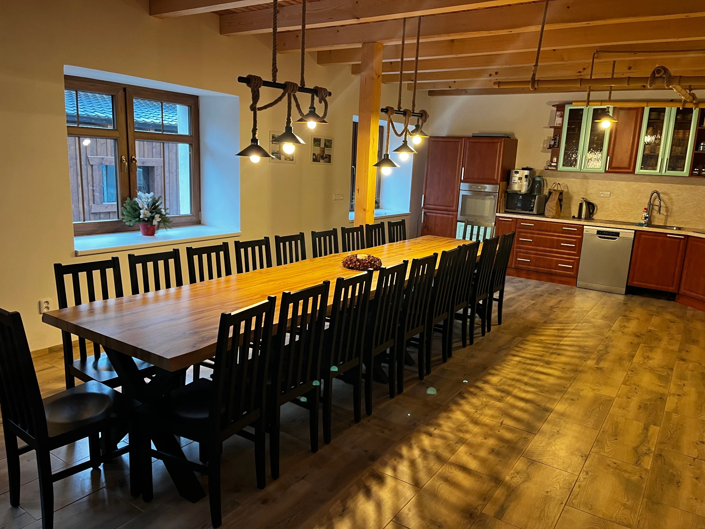
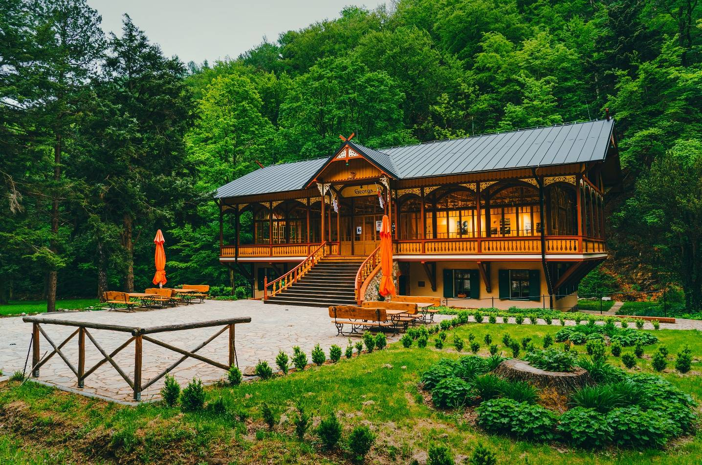

Základní Info
Kdy: Příjezd čtvrtek 19. 2. 2026 - Odjezd neděle 22. 2. 2026 (dopoledne)
Kde: Chalupa Netopýr, Černá Voda 103, 71954
GPS: 50.2972583N, 17.1314522E
Otevřít na Google Maps Otevřít na Mapy.czO Chatě
Bude to spíše chalupa než chata.. Avšak s příhodným jménem Netopýr! S epickou společenskou místností, ve které bude epická společnost a Víťa. Důležité info od majitele:
- Kávovar na chatě je.
- Majitelé prosí o šetření vodou.
- Nádobí je dostatek.
- V kuchyňské lince je spousta doplňkových potravin - sůl, cukr, olej, nějaké koření.
- Parkoviště pojme až 7 aut.
- NESTLAT POSTELE, KTERÉ BYLY POUŽITY.

Odkaz na chalupuProgram
Čtvrtek
- Příjezd
- Volná zábava & Zasvětění nováčků do pravidel Bloodu + krátká ukázka skriptů, které nás čekají
- Workshop: Jak se stát (dobrým) vypravěčem?
Pátek
- Dopoledne: Výšlap (spíše delší procházka, neboj se)
- Odpoledne/Večer: Blood on the Clocktower a cokoliv jiného
Sobota
- Dopoledne: Výšlap
- Odpoledne/Večer: Blood on the Clocktower a cokoliv jiného
Neděle
- Snídaně
- Odjezd (NESTLAT POSTELE, KTERÉ BYLY POUŽITY !)
Pozor!
Také se můžete těšit na vystoupení Slam poetry v podání Celest! Se kterým vyhrála druhé místo na slamu v Ostravě!
A samozřejmostí budou hudební večerní vložky, kdy si všichni spolu zahrajeme a zazpíváme. Tak si vezměte jakékoliv hudební nástroje!
Jídlo a Pití
Voda je ze studny a majitel s majitelkou ji pijí, ale doporučují koupit a pít balenou! Nemůžou zaručit kvalitu vody, nebo že někdo ze sousedů nemá trativod.
Pití
- Obyčejnou balenou vodu (perlivou i neperlivou) koupím + citron či mátu do džbánu. (SPOLEČNÉ)
- Zbytek (džus, pivo, víno, colu...) si každý přiveze sám, podle svého gusta. Vždy je vítáno, když myslíte i na ostatní a vezmete toho víc!
Jídlo
- Snídaně (SPOLEČNÉ): Koupím na první dva dny a na další dny se pojede nakoupit. Koupím základní věci: pečivo, sýry, šunku, máslo, pomazánkové máslo, bílý jogurt, müsli, ovoce (banány, jablka), zeleninu (rajčata, okurky, papriku), čaj, mléko, (zrna kávy dokoupíme, pokud nebude).
- Obědy a Večeře (SPOLEČNÉ): Rozdělíme se do skupin a každá skupina si vezme jedno jídlo, tedy oběd nebo večeři.
- Buchta: Když upečete nějakou buchtu, nebo budete chtít udělat nějakou věc pro všechny, je to jen a jen vítáno!
- Snacky: Jakékoliv svačiny, brambůrky atd. si každý přivezte sám. Opět platí pravidlo, že je vítáno, když myslíte i na ostatní.
Položky označené "SPOLEČNÉ" budou zapsány do společných výdajů, které se poté rozpočítají rovnoměrně mezi všechny, kteří budou součástí společných jídel.
Udělám anketu, kam se můžete každý přihlásit, který oběd/večeři a s kým si vezmete na starost, ať máme vše pokryté. Ingredience si nakoupíte sami a jen spočítejte, kolik to stálo a to přidáte ke společným výdajům.
Pokud by si chtěl někdo vařit zvlášť nebo měl speciální požadavky na jídlo (alergie, intolerance), dejte to vědět dopředu, ideálně do skupinového chatu.
Co s sebou
- Ručník
- Přezůvky
- Vražednou náladu
Platba
Prosím o doplacení/zaplacení do 12.2.2026!
Celková cena za ubytování je 18 100 Kč. Na jednoho tedy 1064,71 Kč (17 účastníků). Počítáno včetně zálohy, tedy pokud jsi platil(a) zálohu, stačí zaplatit 664,71 Kč.
Pokud jsi NEPLATIL zálohu:
Pokud jsi PLATIL zálohu:
Číslo účtu pro ruční platbu: 1799757059/3030
Možné Výlety
Klidně navrhněte cokoliv jiného. Mně se nejvíc líbí ty první dva, i kvůli tomu, že nemusíme nikam ještě jezdit autem.
Boží hora:
- Výšlap o délce cca 12,5 km.

Zřícenina hradu Kaltenštejn:
- Výšlap po vícero místech, nejen na zříceninu. Délka 10 km.

Tančírna + Zřícenina hradu Rychleby
- Muselo by se přejet autem cca 25 minut.
- Ještě jsem se nedíval kde parkovat atd. Ani neplánoval trasu. Prý je tam i dobrá kavárna.


O Hře
Veškeré Info o Bloodu.
Pokud si chceš nastudovat pravidla nebo role dopředu: